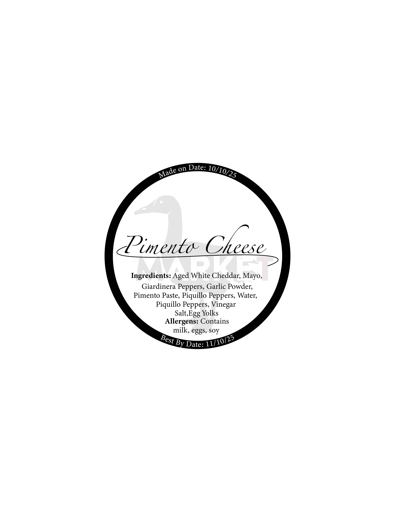
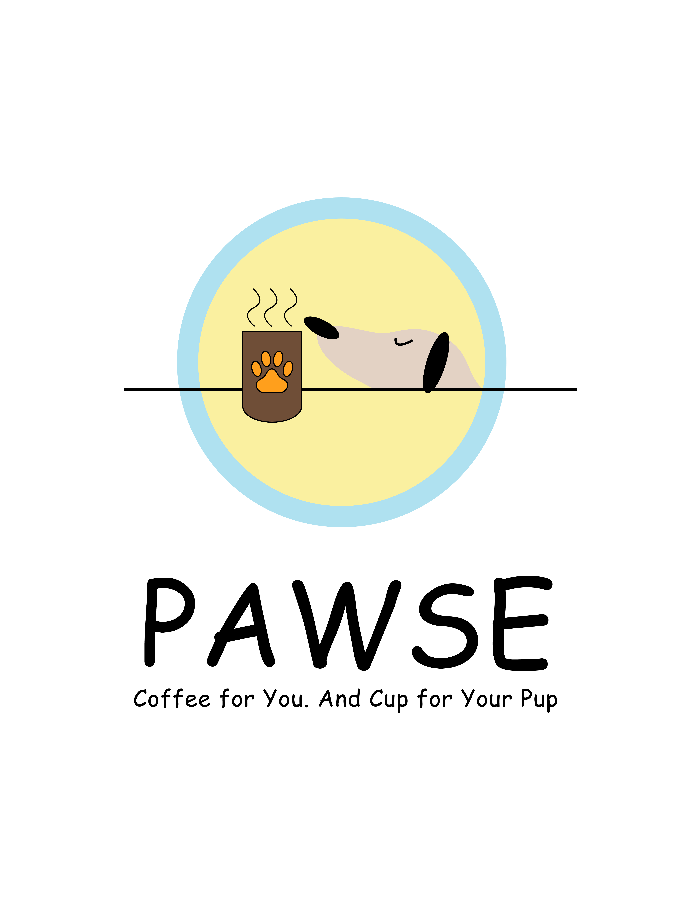

Long Form
Ten-page Spread

This is a 10-page interior design magazine I designed and typeset using Adobe InDesign. Centered on the theme “Home as an Extension of Self,” it combines visuals and text to present home aesthetics and lifestyle concepts. I independently handled the layout and content integration, and I am quite satisfied with this piece in terms of editorial design and visual communication.
Client Project

This is the final logo I designed for Goose the Market. After several discussions with the store owner and presenting two initial concepts, I refined and finalized the logo using Adobe InDesign. The design balances the shop's character with brand needs, creating a visual identity that supports its commercial presence.
UX Design Branding Project

“Pawse” is my personal brand, and its logo was created entirely in Adobe InDesign. I first developed two versions of the brand name, fonts, color palette, and mission statement, then gathered feedback from three participants. Based on their input, I created A/B logo drafts, collected another round of feedback, and finalized the design. The process emphasized user involvement and iterative refinement.